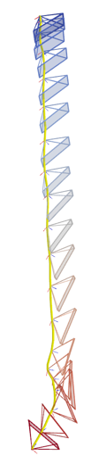
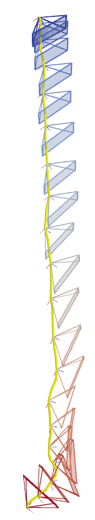
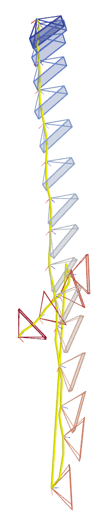

❚❚ pause
Stage II —
Geometry-aware preference optimization

Input
GT poses
· input video
Video-DiT
after Stage I
sample 5 seeds
Seed 1
COLMAP
SfM

small pose error
preferred
Seed 2
COLMAP
SfM

large pose error
rollouts ranked by recovered camera-pose accuracy →
Flow-DPO